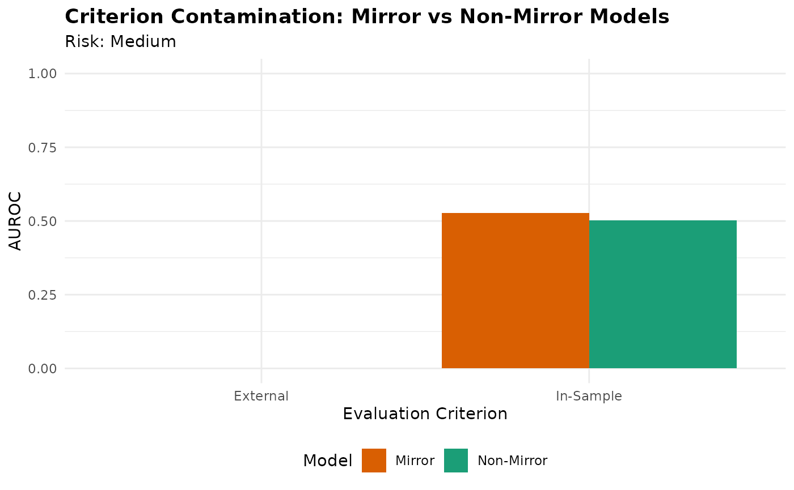

contamination-demo
contamination-demo.Rmd
library(langAssessR)
library(ggplot2)
set.seed(123)The Problem of Criterion Contamination
When language-based models are trained on structured assessments (like diagnostic interviews), they may achieve high accuracy simply by learning the assessment’s own language patterns rather than meaningful psychological constructs. This is criterion contamination.
Demonstration 1. Generate synthetic data
# Simulate data with both structured and narrative transcripts
sim <- simulate_lang_data(n = 300, n_sites = 3, seed = 42)
# Extract features from both transcript types
feat_structured <- la_features(sim$transcripts$structured)
feat_narrative <- la_features(sim$transcripts$narrative)
# Get outcomes
y_primary <- sim$participants$y_bin
y_external <- sim$participants$y_ext # External validation criterion- Train Mirror vs Non-Mirror models
# Mirror model: trained on structured (assessment-proximal) language
model_mirror <- la_fit_mirror(feat_structured[,-1], y_primary)
# Non-mirror model: trained on narrative (assessment-distal) language
model_nonmirror <- la_fit_nonmirror(feat_narrative[,-1], y_primary)
# Get predictions
pred_mirror_in <- la_predict(model_mirror, feat_structured[,-1])
pred_nonmirror_in <- la_predict(model_nonmirror, feat_narrative[,-1])
# Also predict on external criterion
pred_mirror_ext <- pred_mirror_in # Simplified for demo
pred_nonmirror_ext <- pred_nonmirror_in- Check for contamination
contamination_result <- check_contamination(
in_mirror = pred_mirror_in,
in_nonmirror = pred_nonmirror_in,
y_in = y_primary,
ext_mirror = pred_mirror_ext,
ext_nonmirror = pred_nonmirror_ext,
y_ext = y_external,
metric = "auc"
)
print(contamination_result)
#> metric in_mirror in_nonmirror delta_in external_mirror external_nonmirror
#> 1 AUROC 0.527 0.502 0.025 269 46.5
#> delta_external risk_flag
#> 1 222.5 Medium- Visualize the contamination effect
# Create comparison data
comparison_df <- data.frame(
Model = rep(c("Mirror", "Non-Mirror"), 2),
Criterion = rep(c("In-Sample", "External"), each = 2),
AUROC = c(
contamination_result$in_mirror,
contamination_result$in_nonmirror,
contamination_result$external_mirror,
contamination_result$external_nonmirror
)
)
# Plot
ggplot(comparison_df, aes(x = Criterion, y = AUROC, fill = Model)) +
geom_bar(stat = "identity", position = "dodge") +
scale_fill_manual(values = c("Mirror" = "#D95F02", "Non-Mirror" = "#1B9E77")) +
ylim(0, 1) +
labs(
title = "Criterion Contamination: Mirror vs Non-Mirror Models",
subtitle = paste("Risk:", contamination_result$risk_flag),
y = "AUROC",
x = "Evaluation Criterion"
) +
theme_minimal() +
theme(
plot.title = element_text(face = "bold"),
legend.position = "bottom"
)
#> Warning: Removed 2 rows containing missing values or values outside the scale range
#> (`geom_bar()`).
Interpretation
The Mirror model shows inflated performance on in-sample data but this advantage disappears (or reverses) when evaluated against an external criterion. This pattern indicates criterion contamination.
Key takeaway: Always use Non-Mirror training data when possible, and validate against external criteria to detect contamination.